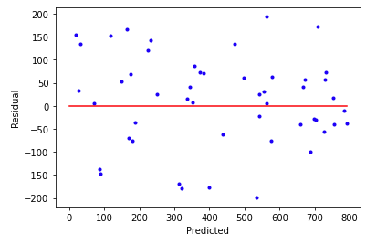

graph TD
A[Start] --> B{Data Input};
B --> C[Predict Target];
C --> D[Compare to Actual Target];
D --> E[Calculate Error/Loss];
E --> F["Update Model Parameters <br> (Weights & Bias)"];
F --> G{Stopping Condition Met?};
G -- No --> C;
G -- Yes --> H[Model Converged];
Machine Learning
03 Regression: Fundamentals, Implementation, and Evaluation
Imron Rosyadi
00. Introduction of Regression
Regression
Regression Introduction Image
Mathematical Model

Mathematical Model for Linear Regression
Features Go In, Targets Come Out
Features and Targets in Machine Learning
What is the Machine “Learning?”
Weights and Biases in Linear Regression
Multiple Features
Multiple Features in Regression
Machine Learning Process
- Infer/Predict/Forecast
- Calculate Error/Loss/Cost
- Train/Learn (Update parameters)
- Iterate/Repeat (until some stopping condition)
Note
This iterative cycle is fundamental to how most machine learning algorithms “learn” from data.
Machine Learning Process Flow
Predict the Selling Price of a House
House Price Data
Predict the Price of a House Using the Machine Learning Process
House Price Scatter Plot
Predict the Price of a House Using the Machine Learning Process
Initial Guess for Line
Predict the Price of a House Using the Machine Learning Process
Line from Initial Guess
Predict the Price of a House Using the Machine Learning Process
Predicted Values Example
Predict the Price of a House Using the Machine Learning Process
Actual vs Forecasted Values
Predict the Price of a House Using the Machine Learning Process
Error Calculation Illustration
Predict the Price of a House Using the Machine Learning Process
Updated Line Illustration
Interactive: Tuning Our Regression Model
Adjust the weight (slope) and bias (intercept) to fit the data and minimize the Mean Squared Error (MSE).
Error/Loss/Cost Functions
Common Loss Functions
Housing Example
Housing Example Data Table
Housing Example (L1 Loss)
L1 Loss Calculation
Housing Example (L2 Loss)
L2 Loss Calculation
Housing Example (MSE)
MSE Calculation
Computer vs. Human Jobs
The computer’s job:
- Start with an arbitrary guess of parameters.
- Tweak these parameters to reduce loss.
- The less the loss is changing, the less the value should be tweaked.
The human’s job:
- Choose the learning rate, a constant value which scales how far we tweak the value during each iteration.
Important
Learning rate is a hyperparameter - not a parameter in the actual model.
Gradient Descent
Gradient Descent Illustration
Linear Algebra Notation for \(y=mx+b\)

Linear Algebra Notation for Single Feature
Linear Algebra Notation for \(y=mx+b\)
Compact Linear Algebra Notation
Multiple Regression (i.e. Multiple Features)
Multiple Features in Multiple Regression
Multiple Regression Notation

Multiple Regression Compact Notation
Closed Form, Exact Solution
\[ \theta = (X^{T} \cdot X)^{-1} \cdot X^{T} \cdot y \]
- Good for small datasets
- Finds optimal solution
- Can be computationally expensive
- Requires an invertible matrix
Batched Data
Break data into smaller batches.
- We’ll use a new batch on each learning step.
- New hyperparameter batch size controls how much data is used for each learning step.
Batched Data for Training
Hyperparameters We Care About
Hyperparameter Tuning Guidelines
01. Introduction to scikit-learn
scikit-Learn
Datasets
Loading
Fetching
Generating
Bunches
Estimators
Transformers
Pipelines
Metrics
Your Turn
02. Linear Regression with scikit-learn
Linear Regression

Linear Regression Fit Animation
scikit-learn: Using Linear Algebra
Note
This is not a learning algorithm that iteratively optimizes. It’s a direct, closed-form solution.
Optimizers
- (Batch) Gradient Descent
- Stochastic Gradient Descent (SGD)
- Mini-Batch Gradient Descent
scikit-learn: Stochastic Gradient Descent
scikit-learn: SGD Hyperparameters
scikit-learn: SGD partial_fit
Loss
Mean Squared Error
\[ MSE = \frac{1}{n} \sum_{n=1}^{n}(y_{i} - \hat{y_{i}})^{2} \]
Train/Validate, Test
Train, Validate, Test Split
Train/Validate, Test, Validate
Double Validation Process
Your Turn
03. Regression Quality
Coefficient of Determination (\(R^2\))
\[ SS_{res} = \sum_{i}(y_i - \hat{y_i})^2 \] \[ \bar{y} = \frac{1}{n}\sum_{i=1}^{n}y_{i} \] \[ SS_{tot} = \sum_{i}(y_{i}-\bar{y})^2 \] \[ R^{2} = 1 - \frac{SS_{res}}{SS_{tot}} \]
Mean Squared Error (MSE)
\[ MSE = \frac{1}{n} \sum_{n=1}^{n}(y_{i} - \hat{y_{i}})^{2} \]
Root Mean Squared Error (RMSE)
\[ RMSE = \sqrt{\frac{1}{n} \sum_{n=1}^{n}(y_{i} - \hat{y_{i}})^{2}} \]
Note
RMSE returns the error in the original units of the target variable for easier interpretation.
Mean Absolute Error (MAE)
\[ MAE = \frac{1}{n} \sum_{n=1}^{n}(|y_{i} - \hat{y_{i}}|) \]
Predicted vs. Actual Plots
Good Predicted vs Actual Plot
Predicted vs. Actual Plots (Positive Bias)

Predicted vs Actual Plot with Positive Bias
Residual Plots
Good Residual Plot
Residual Plots (Bias Example)

Residual Plot with Bias
Your Turn
04. Polynomial Regression & Overfitting
Outline
- Recall Linear Regression
- Polynomial Regression: What is it and how is it different (or not so different)?
- Caution! Dangers of polynomial regression!
Tip
Understanding when and how to use polynomial regression is key to modeling complex system behaviors in ECE.

Linear Regression Fit Animation

Dataset for Polynomial Regression

Linear Fit on Non-linear Data
Polynomial Fit on Non-linear Data
Polynomial Equations
Examples of Polynomial Equations
What is the Original Curve?
Original Polynomial Curve
Polynomial Regression Process
Polynomial Regression = Linear Regression
Turn the original polynomial regression problem into a polynomial regression problem with multiple features.
Overfitting
Dataset for Overfitting Example
Overfitting Demonstration
Overfitting Analogy: Clothing Fit
Well-fitting shirt
Overfitted clothing
Underfitted clothing

Just right fit
Illustration of Overfitting Regression
How Do We Avoid This?
Avoiding Overfitting
- Simpler polynomial
- More training data
- Dropping out some training data (e.g., regularization)
- Overfitting penalties (regularization)
Important
Regularization is a key technique to manage overfitting by adding penalties to model complexity.
Regularization
Recall: Mean Squared Error
Mean Squared Error Formula Breakdown
Lasso (L1) Regularization
Lasso (L1) Regularization Formula
Ridge (L2) Regularization
Ridge (L2) Regularization Formula
ElasticNet (L1 + L2)
Which Regularization Is Best?
Caution
The choice of regularization often depends on the specific dataset and problem. Experimentation is key!